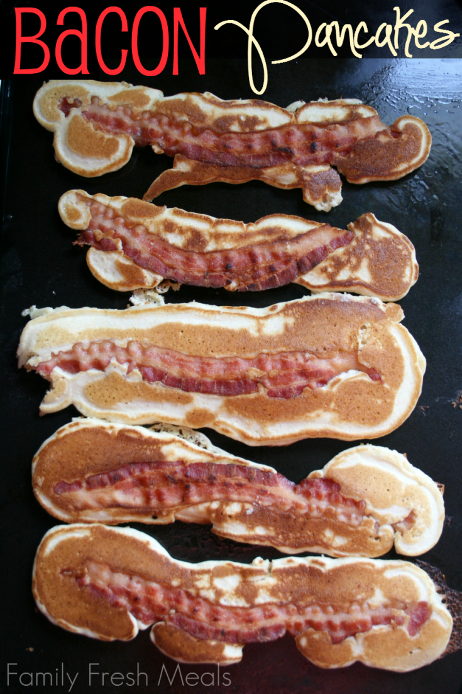

BACON PANCAKES
How to make them
"Bacon pancakes
Making Bacon Pancakes"
-Jake the Dog
\

Ingredients
- 6-8 pieces of bacon, cooked
- 2 cups your favorite dry pancake mix
- 2 eggs
- 1 cup milk
Directions
- Start by mixing together pancake mix, eggs and milk. Whisk until most lumps are gone.
- Heat non-stick skillet using a medium/high heat.
- To prevent any sticking and to add flavor, I prepare my skillet with a little butter.
- Place bacon slices on skillet and then top with pancaked batter until bacon is covered. pour
pancake batter
over bacon
- Cook until top is bubbly and edges start to dry. Flip and continue cooking until other side is golden brown
(about 45 seconds-1 minute). Serve immediately.
Here is familyfreshmeals' website
that I got this recipe from!
Contact Me!
My email
University of Montana
23 Campus Dr
Missoula, MT 59812